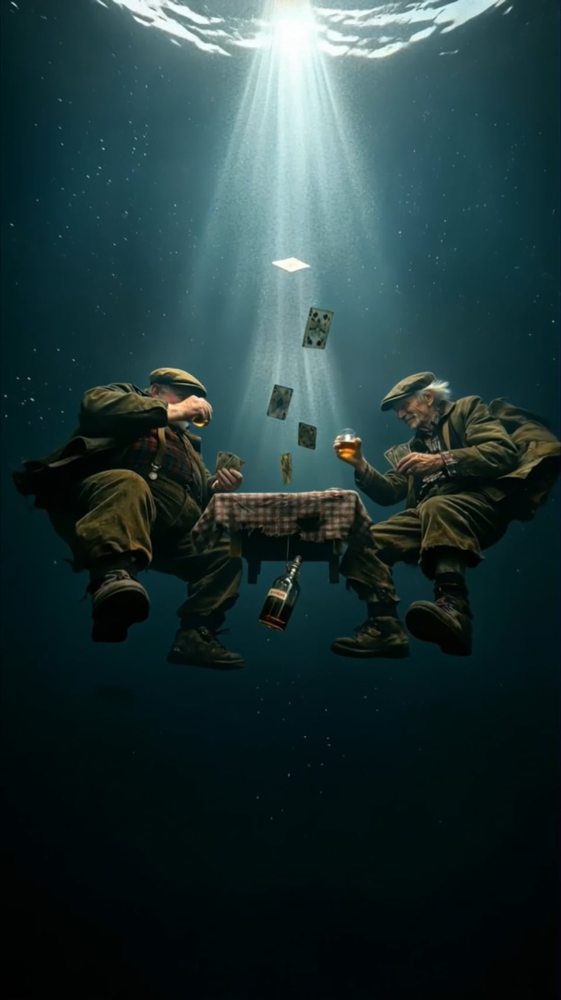

ŒUVRE 14Mamie Cannes
14
Mamie Cannes
Sketch · Groland · Canal+
Un sketch de Groland autour de Cannes, qui joue avec les codes du glamour et une figure de mamie décalée.
ŒUVRE 13 / Sketch · Groland · Canal+
Un sketch d’environ trois minutes entièrement réalisé en IA générative pour Groland, autour d’un procès et de ses personnages.
NOTE DE LECTURE / 13
Le tribunal met en jeu la continuité des personnages, des regards et des réactions au service du rythme comique.
ÉCHOS / AUTRES ŒUVRES
Sketch · Groland · Canal+
Un sketch de Groland autour de Cannes, qui joue avec les codes du glamour et une figure de mamie décalée.

Sketch · Groland · Canal+
Deux papys jouent aux cartes dans un univers sous-marin : une situation familière déplacée dans un décor impossible.